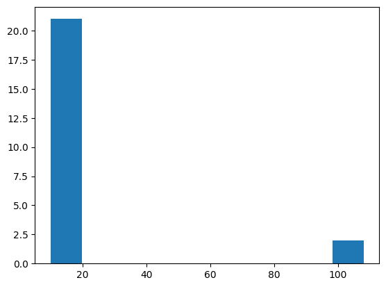

import numpy as np
import matplotlib.pyplot as plt
%matplotlib inline
dataset = [11, 10, 12, 13, 15, 12, 11, 14, 12, 13, 15, 18, 17, 19, 107, 12, 13, 14, 16, 12]
plt.hist(dataset)

Above is Histogram for given disb.
Outlier Detection
def detect_outlier(data, threshold = 3):
mean = np.mean(data)
std = np.std(data)
z_scored_data = [(i - mean) / std for i in data]
z_scored_data = [z_scored_data.index(i) for i in z_scored_data if i > threshold]
return [data[i] for i in z_scored_data]
detect_outlier(dataset)
# Output: [107, 108]
Probability is a measure of the likelihood of an event.
E.g. Rolling a dice {1,2,3,4,5,6}
Prob(6) = # of way event can occcure/ # of possible outcome = 1/6
Toss a Coin {H, T}
Prob(H) = 1/2
Addition Rule (Probability , "or")
Mutual Exclusive Events: 2 events are mutually exclusive if they cannot
occur in
same time. e.g. Rolling a dice or Tossing a coin cause either i can get 1,2,3,4,5,6 or head,tell
but not
at same time 2 events can occur.
Non Mutual Exclusive Events: Two events are non mutually exclusive if
they can
occur in same time. e.g. selecting a card from deck of cards. the card can be of King as well as
Red
Heart
~ If i toss a coin what is the probability of getting a head or a tail?
Prob(Heads or Tails) ?
Prob(A or B) = P(A) + P(B)
Prob(Heads or Tails) = 1/2 + 1/2 = 1
~ If what is the probability of getting a 3 or 6 or 1?
Prob(A or B or C) = P(A) + P(B) + P(C)
Prob(1 or 3 or 6) = 1/6 + 1/6 + 1/6 = 1/2
~ What is probability of getting Queen or a Heart?
Non Mutual Exclusive Events.
P(queen) = 4/52 P(heart) = 13/52 P(queen and heart) = 1/52
Addition Rule for Non Mutual Exculsive Events: P(A or B) = P(A) + P(B) - P(A U B)
Hence Probability will be P(Queen or Heart) = 4/52 + 13/52 - 1/52 = 16/52
Multiplication Rule
Indepedndent Events: If each event is of same probabilty to occur.
e.g. Rolling a dice, tossing a coin
Dependent Events:If a bag is having 2 green balls and 3 red balls.
if a ball is picked first P(Red) = 3/5 and P(Green) = 2/5
say first ball is a red ball.
So next time when we pick the balls probability will be P(Red) = 2/4 and P(Green) = 2/4. So this
is
called Conditional Probability
Q1. What is the prob of getting a 5 and 4 in a dice?
- - Prob(A and B) = P(A) * P(B) = 1/4
Q2. WHat is prob of drawing a Queen and then aces from a deck or cards?
- - Prob(A and B) = P(A) * P(B/A)
= P(queen) * P(aces/queen)
= 4/52 * 4/51
Permutation and Combination
Permutation
A permutation is an arrangement of objects in a specific order. The order of
selection matters in permutations.
Formula for Permutations:
P(n, r) = n! / (n - r)!
Example:
How many ways can 3 people (A, B, C) be seated in a row?
P(3,3) = 3! / (3-3)! = 6
Possible arrangements: ABC, ACB, BAC, BCA, CAB, CBA
Combination
A combination is a selection of objects where order does not
matter.
Formula for Combinations:
C(n, r) = n! / (r!(n - r)!)
Example:
How many ways can you choose 2 people from a group of 3 (A, B, C)?
C(3,2) = 3! / (2!(3-2)!) = 3
Possible selections: AB, AC, BC
Key Differences
Feature
Permutation
Combination
Order
Matters
Doesn't Matter
Formula
P(n, r) = n! / (n - r)!
C(n, r) = n! / (r!(n - r)!)
Example
Arranging people in a line
Choosing team members
P-Value Explanation
What is a P-Value?
A p-value is a statistical measure that helps determine
the significance of results in a hypothesis test. It tells us the
probability of obtaining the observed results assuming the null
hypothesis is true.
Interpreting the P-Value
If p-value < 0.05 → Reject the null hypothesis (H₀)
If p-value ≥ 0.05 → Fail to reject the null hypothesis (H₀)
Example 1: Coin Toss
Suppose you toss a coin 100 times and get 70 heads.
You want to test if the coin is fair.
Null Hypothesis (H₀): The coin is fair (50% heads).
Alternative Hypothesis (H₁): The coin is biased.
After statistical analysis, you get a p-value = 0.03.
Since 0.03 < 0.05, we reject H₀ and conclude the coin is likely biased.
Example 2: New Drug Effectiveness
A pharmaceutical company tests a new drug to see if
it lowers blood pressure better than the existing drug.
Null Hypothesis (H₀): The new drug is no better than the old one.
Alternative Hypothesis (H₁): The new drug is more effective.
After conducting a study, the p-value is found to be 0.08.
Since 0.08 > 0.05, we fail to reject H₀, meaning there's not
enough evidence to claim the new drug is better.
We start with two hypotheses:
Null Hypothesis (H₀): There is no significant effect or difference.
Alternative Hypothesis (H₁): There is a significant effect or difference.
Example:
A teacher believes a new teaching method improves student performance.
H₀: The new method has no effect.
H₁: The new method improves performance.
Step 2: Select a Significance Level (α)
The significance level (α) is the probability of rejecting H₀ when it's actually true.
A common choice is:
α = 0.05 (5% significance level)
Step 3: Collect and Analyze Data
Example Data:
- Traditional teaching: Mean score = 70, Std Dev = 10, n = 30
- New method: Mean score = 75, Std Dev = 12, n = 30
We perform a t-test to compare the two groups.
Step 4: Compute the Test Statistic
We use the formula for the t-test:
t = (X̄₁ - X̄₂) / sqrt( (s₁²/n₁) + (s₂²/n₂) )
Where:
X̄₁ = 75, X̄₂ = 70
s₁ = 12, s₂ = 10
n₁ = 30, n₂ = 30
After calculation:
t = 1.94
Step 5: Find the Critical Value or P-Value
For a two-tailed t-test at α = 0.05 and df = 58:
Critical t-value ≈ ±2.00
P-value = 0.057
Step 6: Make a Decision
Compare p-value with α:
- P-value (0.057) > α (0.05) → Fail to reject H₀
- Conclusion: Not enough evidence to prove the new method is better.
OR using critical value:
- |t| (1.94) < Critical value (2.00) → Fail to reject H₀.
Final Conclusion
There is no significant evidence to conclude that the new teaching
method improves student performance at the 5% significance level.
Hypothesis Testing - Is the Coin Biased?
Step 1: Define the Hypotheses
We toss a coin 100 times and get 65 heads.
We want to check if the coin is fair (unbiased).
Null Hypothesis (H₀): The coin is fair (P = 0.5).
Alternative Hypothesis (H₁): The coin is biased (P ≠ 0.5).
Step 2: Choose a Significance Level (α)
We use the common significance level:
α = 0.05 (5% significance level)
Step 3: Collect Data
Observed Data:
- Total Tosses (n) = 100
- Heads Count (X) = 65
- Expected Probability for Fair Coin (P) = 0.5
Step 4: Compute the Test Statistic
We use the formula for the Z-test for proportions:
Z = (X/n - P) / sqrt(P(1-P)/n)
Substituting values:
Z = (65/100 - 0.5) / sqrt(0.5 * 0.5 / 100)
= (0.65 - 0.5) / sqrt(0.0025)
= 0.15 / 0.05
= 3.0
Step 5: Find the Critical Value or P-Value
For a two-tailed test at α = 0.05:
- Critical Z-values = ±1.96
- P-value for Z = 3.0 is 0.0027 (from standard normal table)
Since 0.0027 < 0.05, we reject H₀.
Step 6: Conclusion
Since the p-value (0.0027) is less than 0.05, we reject the null hypothesis.
Conclusion: The coin is likely biased.